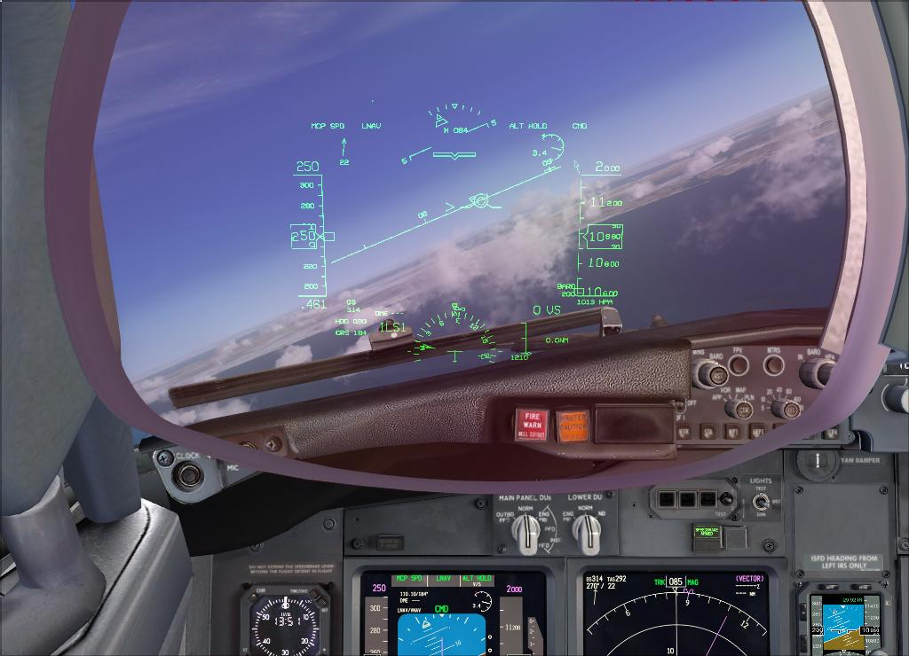
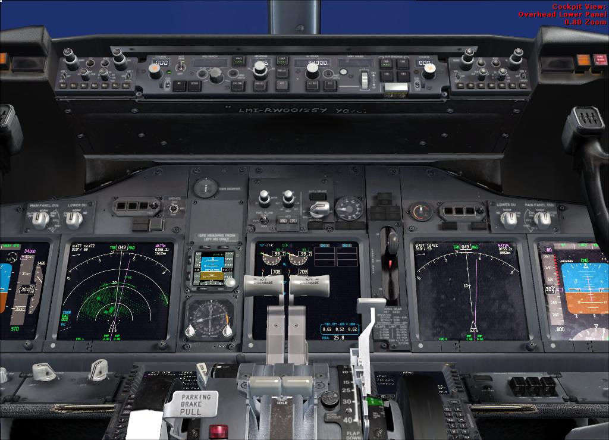
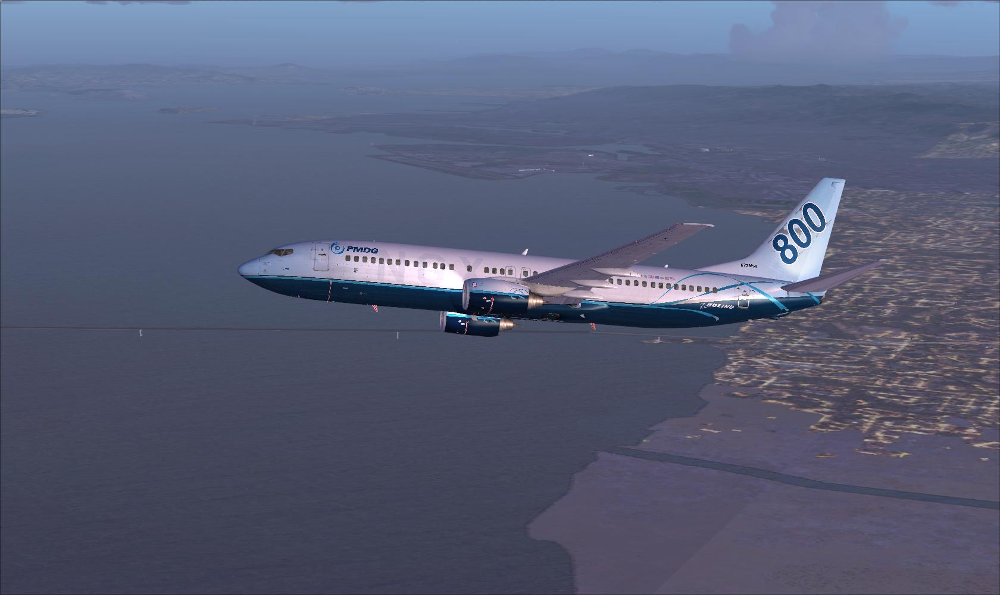
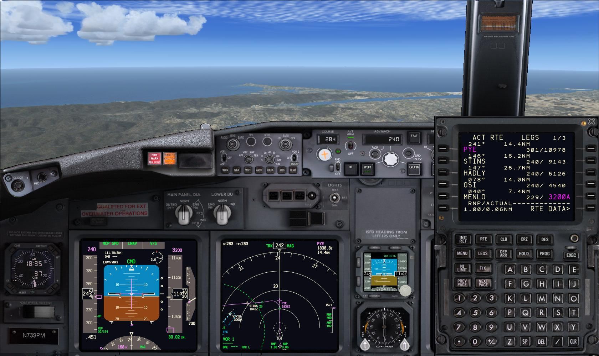
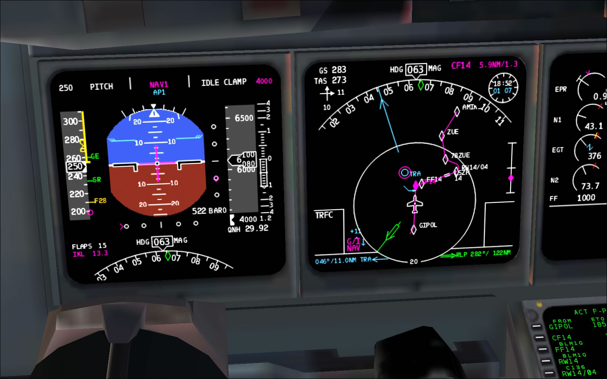

PMDG 737NGX Review
by Don Filer
Posted on January 1, 2019 at 12:00 PM

This is a milestone in flight simulation product history. A very realistic simulator aircraft meets a game-priced, flight simulation platform with the most precision and accommodation to date.
Gorgeous isn’t she? Three years of anticipation preceded the release of PMDG’s promised 737NGX for Microsoft Flight Simulator X. Just my luck we at FlightSim.com didn’t get PMDG’s news release about the 737NGX this past August. Someone else’s mistake led to a surprisingly good beginning of the new year for me! I’ve had the good fortune to review PMDG’s MD-11X, BAE Jetstream-4100 Turboprop and now the long awaited Boeing 737 800/900 NGX. It’s like Christmas in February.
One of the benefits of reviewing a new sim model after it’s been on the market for six months is, there are lots of reviews and videos already published - shortening the learning curve. This model is a continuation of PMDG’s excellent training sims for Flight Simulator. Their original 737 along with the Queen of the Skies 747 for Flight Simulator would provide adequate background for mastering the new 737NGX. Due to its complexity there are already companies and individuals making training add-ons for this product. PMDG refers to Angle of Attack, as one of them in their documentation. They produced a very convincing video of the cockpit that’s about an hour long.
After viewing it, you’ll be drooling too. The new release is “as real as it gets” according to the abundant, supplied digital documentation; the price of which is $329 in printed form. That’s what it costs for just the documentation. So at $69.99, PMDG’s 737NGX is a bargain. The digital documentation is in Adobe’s Portable Data Format (PDF). I got the boxed edition which includes a printed version of the Tutorial; that file is included digitally in PDF as well. The Next Generation 737 is Boeing’s response to the European Airbus A320 and it incorporates a lot of the latest technology especially in the flight management computer and autopilot. A great new addition to this 737NGX is a stunning heads up display. But I’m getting ahead of myself.
In addition to its price I had other considerations about getting this sim. How it would impact frame rates and system requirements foremost among them. I was very pleasantly surprised the frame rates are in the 10 to 12 FPS range with a target of 30 and I’ve experienced few CTDs or restarts. (3 year old Intel Core 2 Quad CPU Q6600 (Dell XPS 420) running at 2.4 GHz with 6 Gigs of RAM. See Test System specifications at the end). Last summer when first released, there were problems a plenty but PMDG got right on them and issued a service pack update and free downloads. With the number of possible permutations, and there are quite a few, bugs were bound to be discovered.
PMDG put it all in one place this time alleviating the need to pause the simulator to get information for the flight outside the simulator itself. There were load managers and weight computations that had to be made from outside the cockpit in the MD-11X and J-4100. That’s all changed now in the NGX.
Aerosoft and PMDG with the help of Boeing and several 737NG pilots have achieved a new standard in realistic sim modeling. This is very realistic and flies like a passenger jet pilot’s dream. The VC mode was the primary focus and even the horizon looks different between the virtual cockpit and the 2D panel which displays more knobs and dials and switches from the same eye-level viewpoint (unless you zoom out in VC). The documentation also makes reference to TrackIR, a hardware add-on that allows you to (view) from the direction a sensor that fits on your head provides. It purports to be a more realistic environment.
That leaves the 2D fans a bit put off and left behind. Another way of looking at it is there are a couple of missing pieces in the 2 dimensional panels. Three years and a releasable product that would not be a memory hog and frame rate killer required leaving out a 2D throttle. It’s a small thing to leave out I suppose. Frankly, access to most of the interior is pretty easy in the Virtual Cockpit anyway.
While I’m complaining, pricing seems a bit of a mess too. The $69.99 PMDG 737NGX includes the 800 and 900 variants (with and without winglets). You have to pay another $24.99 for the 600/700 variants. The NGX is a realistic simulator. To vouch for this fact, watch out the pilot’s window when you change the fuel and payloads on the FMC. The plane actually bobs down and up again to account for adding or subtracting weight.
Documentation
The PMDG 737NGX comes with six documents: Introduction, PMDG 737NGX Tutorial, PMDG 737NGX Flight Crew Training Manual, PMDG 737NGX Flight Crew Operations Manual Vol. 1, PMDG 737NGX Flight Crew Operations Manual Vol. 2, and PMDG 737NGX Quick Reference Handbook.
You don’t have to read the documentation (and some won’t). I found a couple of tips in the beginning of the Introduction that made me realize reading the documentation is vitally important. A setting of “True” for Wide View Aspect in my FSX.cfg file made a difference in most of the views of the plane. Game settings are described in detail and may be helpful to some who encounter problems. That’s funny, because everybody will encounter problems and the documentation is the first place you should go to figure things out. YouTube is also a great reference for tutorials on and about most aspects and procedures in the 737NGX.
Finding things in the documentation may take some time. There isn’t a table of contents or an index. So finding “engine start procedure” for example, is not very practical in the current format
Installation
Installation, activation and setup are straight forward and shouldn’t be a problem. The first time through the installation you will have the option to install everything automatically or customize your selections. The second time through, you will have three options. Installation like before, repair, or to remove completely. Activation requires a product number you will find on the DVD packaging. You’ll need to have a fairly healthy PC and Microsoft FSX installed on your system and since so much of the documentation is in PDF, you’ll need Adobe Reader which is a free download from Adobe.
This product is a perfect marriage between the Boeing 737NGX airplane and the FSX simulator platform. PMDG managed to get around FSX’s quirks and some of its shortcomings through careful testing, abundant feedback and input from actual airline pilots. As a result, a few FSX commands do not work. For example the keyboard command alpha letter L does not turn the lights on and off. PMDG also includes a couple of new programs. One to optimize your system’s performance and another adds liveries to your hanger making sure the files go to the right folders.

Exterior
The supplied camera angles of the exterior include three passenger wing shots on both sides of the plane. The liveries are not McPhat quality and actually fall short of the MD-11X, but they are not bad either. Some simmers take offence to the availability of liveries that are fictional. I don’t think they are in the same crowd as those who really like exterior eye candy. That isn’t where this sim excels. The level of precision is head and shoulders above most comparable products on the market today.
Liveries are a free download away from PMDG on their download page. Among those recognizable airlines I chose, I noted they are all detailed with the most current graphics and company logos. Here is the latest list of available liveries.
737-800NGX
Air Algerie, Air Europa, Malev Hungarian Airlines (EU Presidency 2011), Malev Hungarian Airlines (oneworld), SAS Scandinavian Airlines (Saga Viking), Thomson Airways (Thomsonfly.com)
737-800NGX Winglets
Airberlin, Air Jamaica, Alaska Airlines, Alaska Airlines (alaskaair.com), Alaska Airlines (Lei), Alaska Airlines (Spirit of Seattle), American Airlines , Austrian Airlines, Austrian Airlines (Star Alliance), British Airways Virtual, Caribbean Airlines, China Airlines, Continental Airlines, Copa Air Lines, Delta Air Lines , Delta Air Lines (Ribbons), El Al Israel Airlines, GOL Transportes Aereos, GOL Transportes Aereos (Short Field Package), Japan Airlines, KLM Royal Dutch Airlines, kulula.com (Flying 101), Lauda Air, Mango, Norwegian Air Shuttle, Pegasus Airlines, Qantas Airways (Old Livery), Qantas Airways (New Livery), Royal Air Maroc, Ryanair, S7 Airlines, SAS Scandinavian Airlines (Freja Viking), South African Airways, Southwest Airlines (Canyon Blue), SpiceJet, Sun Country Airlines , Sun Country Airlines (Transavia Leased), Transavia Airlines, Thomson Airways , TUIfly.com, Turkish Airlines, United Airlines (Merger), VARIG, Virgin Australia, Virgin Blue, WestJet, WestJet (Care-antee) 737-900NGX Korean Air 737-900NGX Winglets Alaska Airlines, Continental Airlines, KLM Royal Dutch Airlines, United Airlines (Merger)

Interior
Inside the cockpit is visually stunning. The focus on the VC resulted in very high-resolution at close-range viewing of every knob and switch from the overhead panels to the MCD, to the console panels. This is truly where the focus is in a real simulator and it is indeed presented very well. You can see for yourself from the Angle of Attack free video on Youtube.
In addition to the first ever optically collimated heads up guidance system in a flight simulator aircraft, you will find the terrain radar on the navigational display to be over the top. If you’re an avid flight simulator enthusiast, you’ll have to get this 737NGX jet in your hanger. The animations have been done remarkably well and each switch and toggle has its own properties in terms of span and range and sound as well. The push back animation introduced in the MD-11X is used for realism and fuel and payload capacities are selected with PMDG’s other additions to the FMC.

If you’ve never tinkered with an FMC, you’ll have an opportunity to learn all you ever wanted to know with this one. The 737NGX can be flown without using the flight management computer or autopilot.
One of the neatest features of this simulated airplane is the ability to pause at the top of decent. You can launch into a long flight and go about your business. The sim pauses at the top of descent so you can manage your descent and approach without needing to sit through the most boring part of your flight; unless of course you have programmed in-flight failures to keep you on your toes. Many different failures may be selected from the PMDG setup selection on the CDU.
This sim is an awesome learning tool with its programmable situation failures and procedures that are all covered with check lists in the documentation. Not too many years ago you would have had to pay a king’s ransom for the capabilities of PMDG’s 737NGX.
Sound
Over 500 recorded sounds are included in this simulator and it sounds as accurate as it looks. Alternating outside views, you will notice the difference in wind sound. The engine sound is remarkable. If it isn’t the real thing it sure sounds like it. I noticed an option to hook up high-end sound systems for even more realism. The flaps, gear and doors all include realistic sounds. All the switches, bells and alarms are vividly recreated also. Some things pop and snap depending on what you’re doing. The First Officer announcements are addictive too. Sounds as well as all the announcement options are adjustable in the options within the FMC. Accuracy was their goal and they succeeded. The engines sound great in the cockpit and all the warnings and lights should be tested as part of the pre flight procedures before takeoff.

Lighting
The 737NGX interior lighting is a site to behold and lives up to what we have come to expect from the masters at PMDG. Light controls can be found on the lower console panel, captain and first officer front panels as well as the overhead panel. While quite complimentary during day flights, you’ll notice dramatic effects at dusk or while flying at night. The FMC also offers another lighting control for the interior cabin lights. There are three more light switches, one for the HUD, one for the compass and another for the uppermost overhead panel.
Flight Dynamics
You will no doubt notice the 737NGX handles differently than other airliner jets. PMDG recreated an accurate realistic experience whether you use a joystick or a yoke. Depending on your climb and takeoff selections, it might be awhile before the first officer announces “V1.” It is the same on landing. The 737NGX flares quite nicely before touching down on the runway. I’m astounded by its smoothness every time I take off and land. If you don’t get everything just right in pre-flight however, you may be susceptible to steep climbs and stalls. Until you have your 737NGX wings, the same will be true on lining up on final approach and touching down. Just fly the plane! She will respond to your tender loving care when the autopilot or FMC won’t.
While there have been over a dozen serious accidents, considering the number of 737s in use, the record isn’t very bad. You’re going to find out why most accidents are a result of pilot error.
Instruments and Panels
Would you believe they all work? There aren’t any bogus or no-op switches. The knobs, switches, levers and buttons have been rendered beautifully and provide for a very realistic visual effect. The readouts are flawless. The primary flight display provides a tremendous amount of information and is the heart of the captain or first officer’s feedback display. The navigation display is quite customizable offering a lot of information in a pretty wide variety of formats; from a plan view, to map view, to the VOR view, and approach view. Additionally, the EFIS “center” button will bring up a visual display of the airplane at altitude overlaid on a modified map view. If the HUD is enabled, the center console will have a special PMDG logo assigned to the HUGS control settings panel. The heads up display should not be overlooked either when it comes to providing detailed information to the pilot. Flight modes, speed, altitude, ILS frequencies, wind speed and direction, air pressure and angle of attack are just some of the data crisply and clearly displayed on the optically collimated heads up guidance system.
Autopilot
Also referred to as the MCP, the autopilot is a true work of art on the part of the PMDG programmers and is offered in one of two models: the newer Collins or the older, classic model from Honeywell. The 737NGX will follow your commands if you fly without the FMC and use the autopilot to manage your flight. The sky’s the limit as the saying goes. In addition to auto throttle, LNAV, VNAV and level change functions are accessed at the middle of the panel.
Flight Manacement Computer
PMDG integrated the FMC (also known as the CDU) into the 737NGX excellently. All the functions work and the FMC even recalculates altitudes and speeds during your flight. It is a truly working calculator necessary for airline pilots to successfully fly from origin to destination.
After going through the tutorial flight a few times you will have enough experience with the FMC to try it out on your own. Reality modeling can be troublesome at this level however. Unless you subscribe to a source for navigational flight data like Navigraph and have all the necessary departure and approach charts and templates, you will find yourself experimenting with waypoints, VORs, SIDs and STARs to navigate your flights successfully.
You may edit your waypoints during flight or change approach STARs and runways and the changes are accommodated immediately but may also require you to “Execute” them. The FMC is where you’ll find PMDG’s panel state startup options like Cold and Dark, or Short and Long Turnaround. It is nice to know that if you start up in a cold and dark cockpit by mistake; pressing the MENU key for 5 seconds on the FMC will allow you access to make PMDG changes. Otherwise, you would have to know how to establish APU power at a minimum to get anything that works on the electrical system started; sort of tricky at night.
PMDG includes several weight calculations into the CDU and selecting the appropriate line select keys will calculate zero fuel weight, V1, VR, V2 speeds, center of gravity calculations and required pitch. You will find many pages of options under the equipment heading that allows you to personalize your 737NGX just the way you want it.
Summary
Technically speaking it’s a masterpiece. Graphically speaking it’s a work of art. Do I like it? You bet.